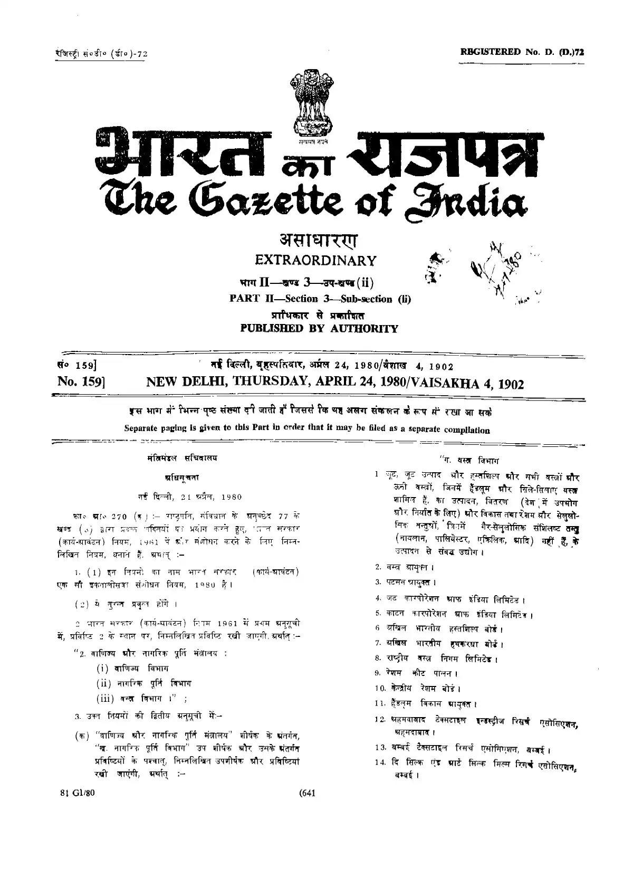
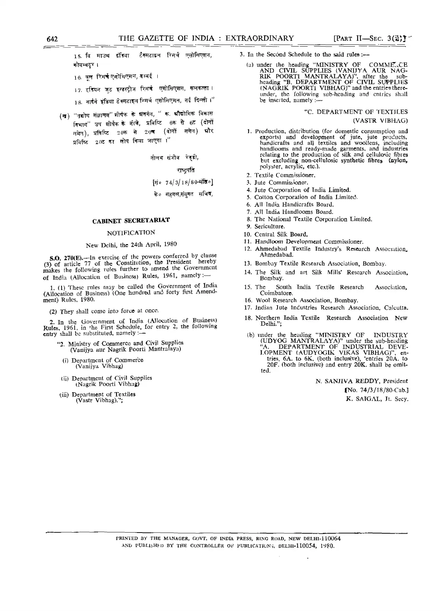

Amendment #141 (S.O. 270(E), 1980)
3 changes: 1 to the First Schedule, 2 to the Second Schedule. 2 applied1 not applied
What it did to the ministries
- grewMinistry of Commerce and Civil Supplies grows from 56 to 74 subjects change 1, 2 · histories: Commerce and Civil Supplies
The order, page by page
Page 1 of 2

Page 2 of 2

123Schedule 1 › entry 2
- 2. Ministry of Commerce and Civil Supplies
- i. Department of Commerce
- ii. Department of Civil Supplies
- iii. Department of Textiles
applied at schedule 1 › ministry 2 in the Rules after #141
after Schedule 2 › MINISTRY OF COMMECE AND CIVIL SUPPLIES › DEPARTMENT OF CIVIL SUPPLIES
- C. DEPARTMENT OF TEXTILES
- 1. Production, distribution (for domestic consumption and exports) and development of jute, jute products handicrafts and all textiles and woollens, including handlooms and ready-made garments, and industries relating to the production of silk and cellulosic fibres but excluding non-cellulosic…
- 2. Textile Commissioner.
- 3. Jute Commissioner.
- 4. Jute Corporation of India Limited.
- 5. Cotton Corporation of India Limited.
and 13 more
- 6. All India Handicrafts Board.
- 7. All India Handlooms Board.
- 8. The National Textile Corporation Limited.
- 9. Sericulture.
- 10. Central Silk Board.
- 11. Handloom Development Commissioner.
- 12. Ahmedabad Textile Industry's Research Association Ahmedabad.
- 13. Bombay Textile Research Association, Bombay.
- 14. The Silk and art Silk Mills' Rescarch Association Bombay.
- 15. The South India Textile Research Association Coimbatore.
- 16. Wool Research Association, Bombay.
- 17. Indian Jute Industries Research Association, Calcutta.
- 18. Northern India Textile Research Association New Delhi.
applied at schedule 2 › ministry MINISTRY OF COMMERCE AND CIVIL SUPPLIES › department C in the Rules after #141
states inferred loose
Schedule 2 › MINISTRY OF INDUSTRY › DEPARTMENT OF INDUSTRIAL DEVE- LOPMENT › entry; Schedule 2 › MINISTRY OF INDUSTRY › DEPARTMENT OF INDUSTRIAL DEVE- LOPMENT › entry; Schedule 2 › MINISTRY OF INDUSTRY › DEPARTMENT OF INDUSTRIAL DEVE- LOPMENT › entry 20K
not applied (the change could not be placed in the Rules as read; see How this document was read)
How this document was read
Changes placed by an inference rule
| Change | Rule | Status | What |
|---|---|---|---|
| 2 | loose | accepted | change 2: ministry MINISTRY OF COMMECE AND CIVIL SUPPLIES taken for ministry MINISTRY OF COMMERCE AND CIVIL SUPPLIES, named loosely |
Known issues
| Change | Issue | Known as |
|---|---|---|
| 3 | change 3: no entry 6A–6K under schedule 2 › ministry MINISTRY OF INDUSTRY › department A | Entries not in the state |
From the Government of India (Allocation of Business) Rules, 1961 and their amendments, as published by the Cabinet Secretariat (cabsec.gov.in), read by orgpedia. The readings of the older scanned gazettes have known gaps.